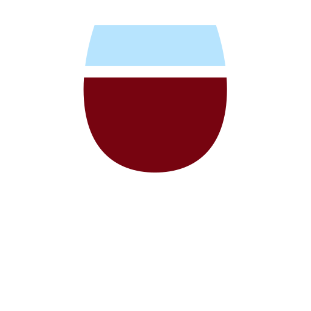
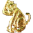
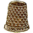
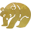

Introduction
Le jeu minimaliste de type Incremental Game.
Thème: la vie d'un étudiant ingé Lyon qui découvre la fal.
Commencez à participer à des événements (dans l'onglet Actions) et réalisez les objectifs pour progresser.
Un pin's représente une rencontre faite lors d'événement fal.
Thème: la vie d'un étudiant ingé Lyon qui découvre la fal.
Commencez à participer à des événements (dans l'onglet Actions) et réalisez les objectifs pour progresser.
Un pin's représente une rencontre faite lors d'événement fal.
Objectifs
Ressources
fal
Emblèmes de filières
Villes
Production
Actions
Légende
Notes de version
- Version 3.1 : Ajout du volet Légende.
- Version 3.0 : Ajout du feminin dans les termes où il n'y en avait pas encore.
- ajout du feminin dans les termes Version 2.13 : Suppression des 2 objectifs inutiles: 'Frodon sacquet de la comté' et 'Anneaux olympépics', comme ça on voit directement comment avoir le .
- Version 2.12 : ajout de Cubi de rouge qui produit du  et Sec de vin.
- Version 2.11 : ajout intronisation
- Version 2.10 : ajustement du coût du mariage: 1parrain, 1capotte, 3missionnaires, 5secs, 1pin's inge. Supression du pachy (temporairement 😉),
- Version 2.9 : ajout de l'insigne anneau et au bout de 10, le pendu . Besoin d'1 pour valider le niveau Hypothétique. Ajout du blagum qui donne l'insigne subtilitruc (utilité à venir).
- Version 2.8 : ajout de l'insigne quand on chante bourré.
- Version 2.7 : changement de l'objectif "Ancien" enlève le  et ajout de 1 . Changement de l'objectif "Hypothétique" 3 et 200 .
- Version 2.6 : ajout de sesque et de fin baiseur . Ajout de "l'achat" de à 50% de chance, avec 5 insignes des 3 positions. Ajout de rachat de lime avec 3 et d'autres trucs. Déplacement de  dans fal.
- Version 2.5 : ajout de [Gagné] ou [Perdu] sur les objectifs. Ajout d'un message quand gagné ou perdu et arret du jeu, même si on refresh.
-
Version 2.4 : de la ressource sec
 et la ressource traquenard qui comptabilise les congrès
et la ressource traquenard qui comptabilise les congrès